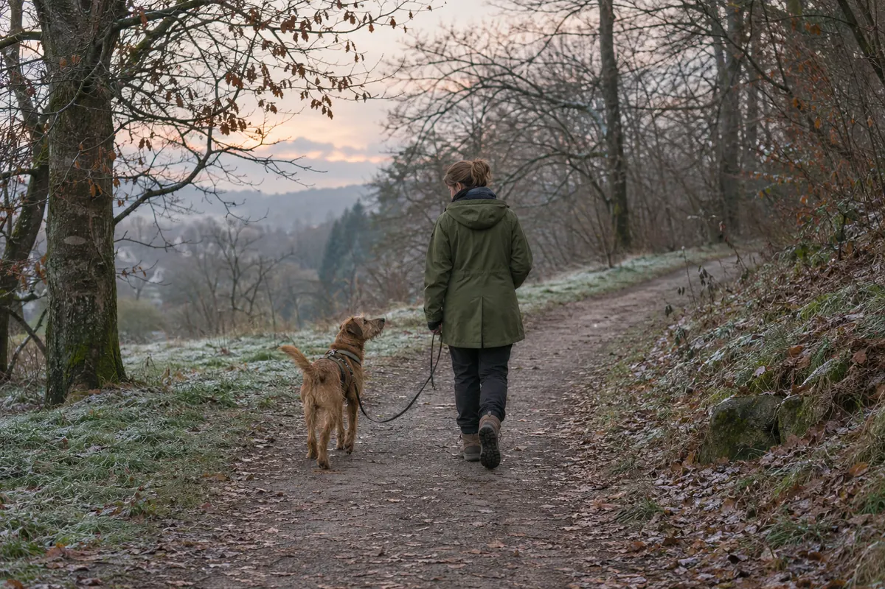
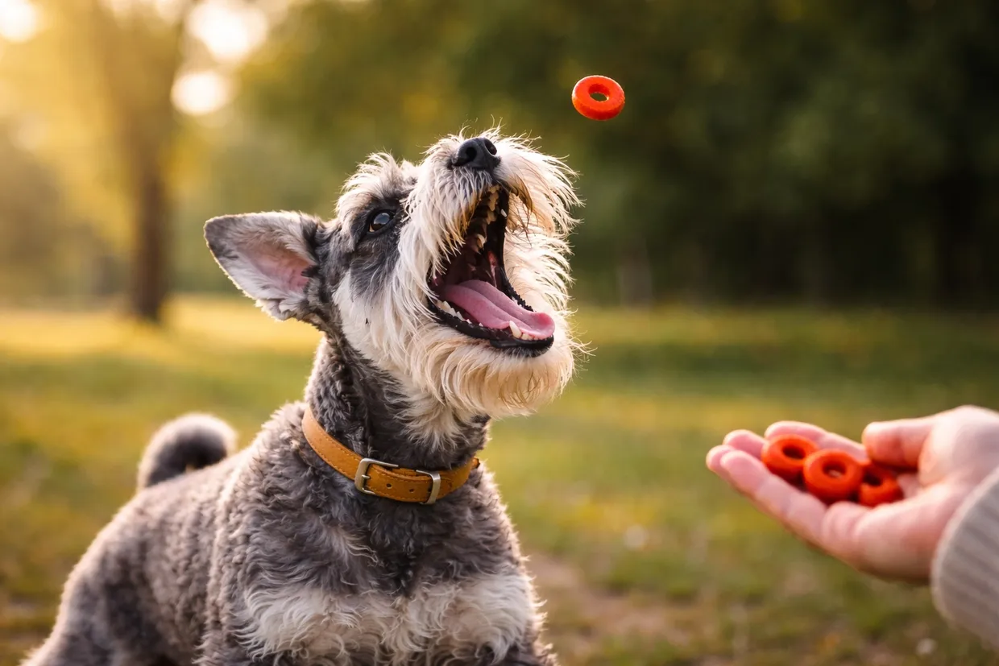
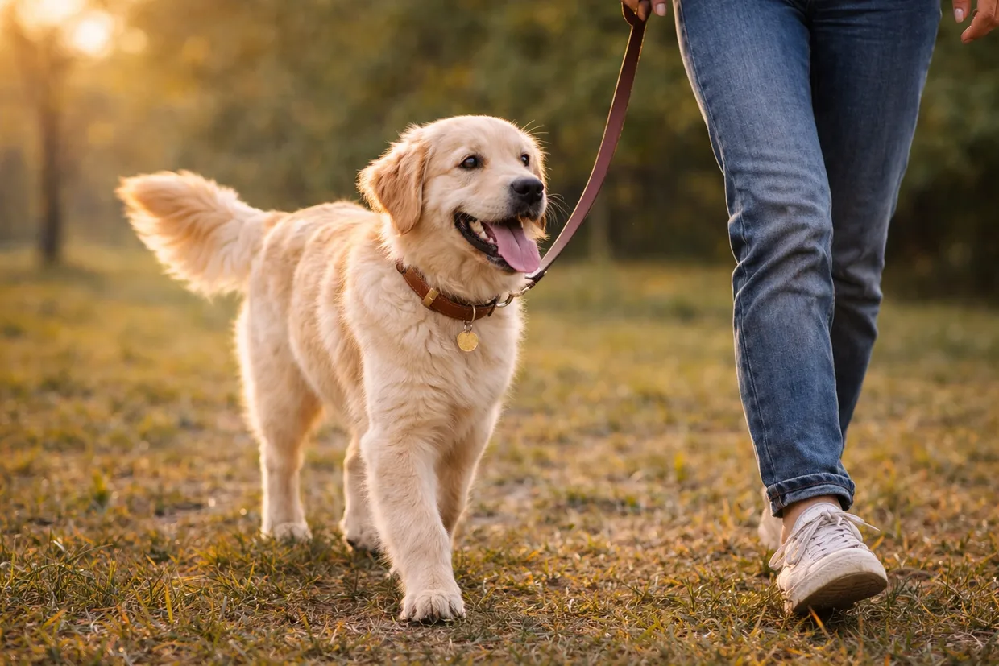
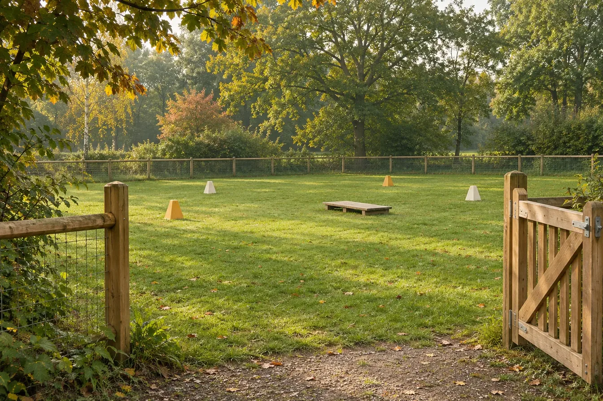
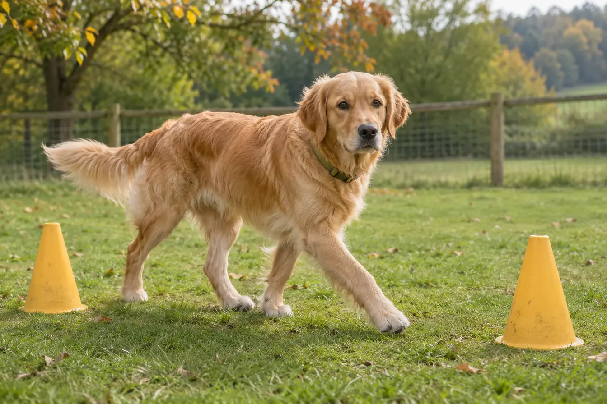

Winterspaziergang mit Hund in der Dämmerung
Vertraute Wege und kurze Pausen helfen euch, wenn draußen das Licht schwindet.
Gewaltfreies Hundetraining
Vom ersten Spaziergang bis zum sicheren Rückruf: Ihr übt in kleinen Schritten, die zu eurem Alltag passen.

Trainingsangebote
Ob Welpe, erwachsener Hund oder gerade erst bei euch eingezogen – hier findet ihr einen Einstieg.

Für die Situationen, in denen ihr euch zu zweit mehr Sicherheit wünscht.
Zum Einzeltraining
Ruhe finden, die Umwelt kennenlernen und die ersten Signale üben.
Zum Welpentraining
In einer neuen Umgebung ankommen und Schritt für Schritt Vertrauen fassen.
Zum TierschutztrainingOrientierung üben, auch wenn Gerüche und Begegnungen gerade besonders spannend sind.
Leinenführigkeit, Rückruf und Warten in kurzen Einheiten aufbauen.
Fragen zum Alltag besprechen und die nächsten Übungen für zu Hause planen.
Der Trainingsplatz
Auf einer eingezäunten Fläche lassen sich Abstand, Ablenkung und Pausen gut an den einzelnen Hund anpassen.


Beide Platzansichten sind KI-generierte Beispielbilder.
News

Vertraute Wege und kurze Pausen helfen euch, wenn draußen das Licht schwindet.
Wie ihr die ersten Minuten nach dem Klingeln gemeinsam üben könnt.
Ein vertrauter Rückzugsort und kleine Pausen helfen deinem Hund durch volle Tage.
Vor dem Training
Am Anfang steht ein Gespräch über euren Alltag. Ihr schaut euch gemeinsam eine konkrete Situation an und wählt eine erste Übung, die ihr zu Hause wiederholen könnt.
Für einen vorsichtigen Hund kann ein ruhiges Einzeltraining der passende Einstieg sein. Abstand, Pausen und eine vertraute Belohnung helfen dabei. Mehr zum Ankommen mit Hund
Ein gut sitzendes Geschirr oder Halsband, eine Leine, Wasser und kleine Belohnungen, die dein Hund mag. Eine vertraute Decke erleichtert Pausen.
Ja. Wenn eine Übung in ruhiger Umgebung gelingt, kommt der nächste Schritt dort, wo ihr sie braucht – zum Beispiel an der Haustür oder auf eurer üblichen Spazierroute.
Haltet eure Fragen für ein erstes Gespräch fest.